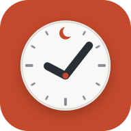

ثبّت Muslim To-Do List
مجاني بالكامل، بلا إعلانات ولا اشتراكات. يعمل دون إنترنت، ومهامك ومواقيت الصلاة والأذكار في مكان واحد.
تطبيق أندرويد الأفضل
تطبيق كامل يُظهر تنبيهات الصلاة حتى وهو مغلق، ويُنبّهك عند انتهاء جلسة التركيز.
- اضغط الزر أعلاه وانتظر حتى يكتمل التنزيل.
- افتح الملف من شريط الإشعارات أو من مجلد التنزيلات.
- إذا طلب الهاتف ذلك، اسمح بـ«تثبيت التطبيقات غير المعروفة» للمتصفح، ثم ارجع واضغط «تثبيت».
- افتح التطبيق واسمح بالإشعارات لتصلك تنبيهات الصلاة.
لماذا يظهر تحذير؟ يُظهره أندرويد لأي تطبيق لا يأتي من Google Play. التطبيق مجاني ومفتوح المصدر، وكوده كاملاً منشور على GitHub.
هواتف سامسونج وشاومي وأوبو وأمثالها: إذا تأخر تنبيه، افتح إعدادات الهاتف ← التطبيقات ← Muslim To-Do List ← البطارية، واختر «غير مقيّد».
أو: ثبّته من متصفح Chrome
- افتح رابط التطبيق في Chrome.
- اضغط القائمة ⋮ في الأعلى، ثم «تثبيت التطبيق» أو «إضافة إلى الشاشة الرئيسية».
بهذه الطريقة تظهر التنبيهات فقط والتطبيق مفتوح.
آيفون وآيباد
- افتح رابط التطبيق في متصفح Safari (لا بد أن يكون Safari).
- اضغط زر المشاركة أسفل الشاشة (أعلاها في الآيباد).
- انزل واختر «إضافة إلى الشاشة الرئيسية»، ثم «إضافة».
- افتح التطبيق من أيقونته الجديدة على الشاشة الرئيسية.
المزامنة على الآيفون: رابط الدخول يفتح في Safari لا في التطبيق، فاكتب في التطبيق الكود الموجود في الرسالة نفسها.
على الآيفون تظهر تنبيهات الصلاة والتطبيق مفتوح.
الكمبيوتر (Chrome أو Edge)
- افتح رابط التطبيق.
- اضغط أيقونة التثبيت في آخر شريط العنوان، أو زر «ثبّت التطبيق» أعلى قائمة المهام.
يفتح في نافذة مستقلة ويعمل دون إنترنت.